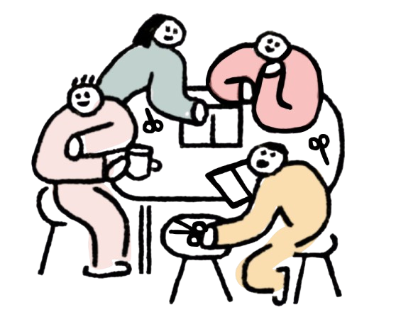
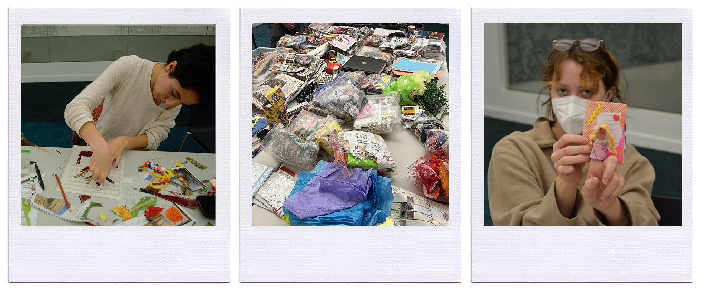

A Pittsburgh Co-DeZINE Project
The Bridges to Belonging digital zine library contains a series of collaborative art booklets created by and with Pittsburgh's community members. This evolving archive amplifies collective voices, fosters connection in a city heavily impacted by loneliness and economic strife, and recognizes shared experiences through creative storytelling.

The Bridges to Belonging project was created Ange Pho and Olivia Terry during our Interactive Design senior capstone class at the University of Pittsburgh.
We’re passionate about bringing people together and revitalizing community in an increasingly disconnected world. During the fall of 2024, we hosted a free-to-access creative workshop at a local, public library to gauge community opinions about third places in the city through the use of zines (small handmade art books). The overwhelming turnout and enthusiasm lit a fire in us to keep building community through creative workshops and producing future collaborative zines.
Join us as we reimagine and celebrate the spaces that bring us all together!